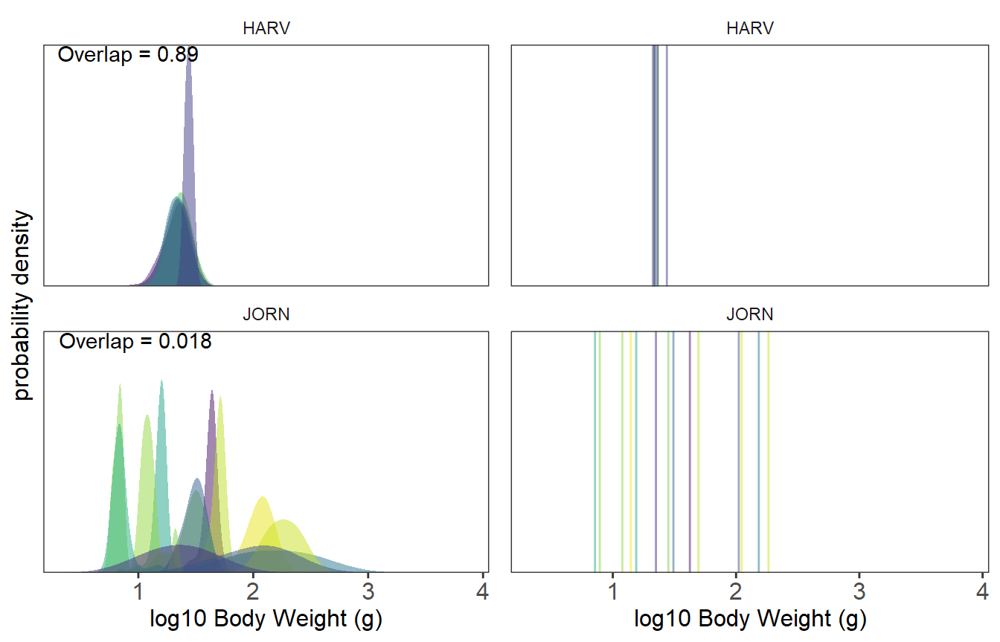

01-Ostats-introduction.RmdThe study of functional traits in ecology enables a greater understanding of the mechanisms underlying patterns of biodiversity. While trait-based research has traditionally focused on mean trait values for a species, there is a growing awareness of the need to pay greater attention to intraspecific trait variation (ITV; Violle et al. 2012). From an evolutionary standpoint, ITV is important because it reflects differences within a species on which natural selection acts, and ecologically these differences within and among species traits may give rise to differences in species interactions (Bolnick et al. 2011, Read et al. 2018).
When ITV is taken into account, trait values of individuals of each species may be represented as a distribution rather than as a single mean value. The degree of trait similarity between species can be measured as the amount of overlap in trait space between all species pairs in a community. Lower overlap indicates greater trait partitioning between pairs of species in a community. The Ostats package calculates a statistic to measure the degree of community-level trait overlap by fitting nonparametric kernel density functions to each species’ trait distribution and calculating their areas of overlap (Mouillot et al. 2005, Geange et al. 2011, Read et al. 2018). The median pairwise overlap for a community is calculated by first determining the overlap of each species pair in trait space, and then taking the median overlap of each species pair in a community. Functions in this package can be used to assess the level of species trait overlap and compare across communities. Effect size statistics can also be calculated against local or regional null models.
Note that we have written an accompanying teaching module to Read et al. (2018), which walks through a figure set exercise for the manuscript (Grady et al. 2018). This teaching module may be helpful to review for interpretation of the overlap statistics and graphs.
The Ostats package is available on Github and can be installed using the devtools package with the line of code below.
devtools::install_github('NEON-biodiversity/Ostats')The Ostats package can be used to do the following:
Calculating overlap statistics against a local null model using Ostats. Ostats is capable of processing both linear (e.g., body size) and circular (e.g., time, angles) data.
The plotting function Ostats_plot is used to produce a visualization of species trait overlap in each community.
The function Ostats is the primary function in this package. This function first generates density estimates for species trait distributions and calculates the intersection of two density functions to produce pairwise overlap values. Ostats then calculates a community overlap value from the pairwise overlap values of all species pairs in the community. Finally, Ostats calculates effect sizes from a null model (z‐score) to test whether trait sorting within the bounds of trait space underlies decreased overlap, allowing the user to explore the drivers of variation in body size overlap.
The input of the function Ostats is taken from a dataset with a column for species identification, a column that indicates which community the individual belongs to, and a column with trait measurements, often log-transformed. The code chunk below generates an input dataset for Ostats, used to calculate the Overlap statistics for sites Harvard Forest (HARV) and Jornada (JORN) from the National Ecological Observatory Network (NEON) (Read et al., 2018). NEON is a National Science Foundation funded network of 81 terrestrial and aquatic field sites strategically located across climatic domains in the United States where standardized protocols are used to sample a variety of ecological observations including small mammal body sizes. Harvard Forest is located in the northeastnern U.S. (Massachusetts) and encompasses a temperate hardwood forest ecosystem. Jornada is located in the southwestern U.S. (New Mexico) and encompasses a desert ecosystem.
# Load the Ostats package.
library(Ostats)
# Data from Read et al. (2018) included with package
# Subset data to only two sites (Harvard and Jornada)
# and keep only the relevant columns.
# Add a new column named "log_weight" to log-transform the measurements.
dat <- small_mammal_data[small_mammal_data$siteID %in% c('HARV', 'JORN'),
c('siteID', 'taxonID', 'weight')]
dat <- dat[!is.na(dat$weight), ]
dat$log_weight <- log10(dat$weight)Below is a subset of the input dataset. Each row represents an individual small mammal that was trapped and weighed, with information of its local of capture (siteID), species identity (taxonID), body mass in grams and the log value of the body mass in grams. Here we show only a single row from each species at each site.
# Subset the first row of each siteID and taxonID to summarize the data.
do.call(rbind, lapply(split(dat, interaction(dat$siteID, dat$taxonID), drop = TRUE),
function(x) x[1,]))
#> siteID taxonID weight log_weight
#> JORN.CHPE JORN CHPE 16.0 1.2041200
#> JORN.DIME JORN DIME 47.0 1.6720979
#> JORN.DIOR JORN DIOR 43.0 1.6334685
#> JORN.DISP JORN DISP 122.5 2.0881361
#> JORN.MUMU JORN MUMU 13.0 1.1139434
#> HARV.MYGA HARV MYGA 19.0 1.2787536
#> HARV.NAIN HARV NAIN 17.0 1.2304489
#> JORN.NEAL JORN NEAL 85.0 1.9294189
#> JORN.NEMI JORN NEMI 143.0 2.1553360
#> JORN.ONAR JORN ONAR 33.0 1.5185139
#> JORN.ONLE JORN ONLE 27.5 1.4393327
#> JORN.PEFA JORN PEFA 21.0 1.3222193
#> JORN.PEFL JORN PEFL 6.0 0.7781513
#> HARV.PELE HARV PELE 36.0 1.5563025
#> JORN.PELE JORN PELE 39.0 1.5910646
#> HARV.PEMA HARV PEMA 23.5 1.3710679
#> HARV.PEME HARV PEME 23.0 1.3617278
#> HARV.PESP HARV PESP 29.0 1.4623980
#> JORN.PGSP JORN PGSP 14.0 1.1461280
#> JORN.SIHI JORN SIHI 170.0 2.2304489In the below example, all arguments are set to their default values.
To explore the drivers of variation in body size overlap, Ostats can implement a null model to test whether individual species’ body size distributions are more evenly spaced along the trait axis than expected by chance. This approach evaluates the z‐score of each observed community against the distribution of a user defined number of null communities. In these null communities, species body size means may be shuffled randomly, retaining the shape and width of the distribution around the mean for each species.
The argument data_type has a default value of "linear", as the data processed are one dimensional (i.e., body masses of individual small mammals). The alternative input for this argument is "circular" for data that are periodic (e.g., measured in radians or degrees).
The argument output specifies whether the median or mean of all pairwise overlap values between distributions of species will be returned. The default value for output is "median". The choice between median and mean for the output will depend on the variability in the input data and it is a good idea to see how much this choice influences the results of the analysis. For examples of analyses using the median and mean, respectively, see Read et al. 2018 and Mouillot et al. 2015.
The weight_type argument specifies whether or not the abundances of each species within a community will be used to calculate the median or mean output returned by the Ostats function. Using the default value "hmean", the function weights the pairwise overlaps of trait distributions of each pair of species in each community as 2/(1/abundance_a + 1/abundance_b), where abundance_a and abundance_b are the numeric abundances of each species in the pair. The harmonic mean weight_type is set as the default as it minimizes the effect of outliers and rare species. If the argument weight_type = "none", no weights are used for the calculation of mean or median. If weight_type = "mean", raw abundances of species are used as weights.
The argument nperm sets the number of permutations, or randomly generated data null community subsets, for the null model. The default number of permutations is 99. The argument nullqs sets the quantile limits for effect size statistics calculation. This argument should be a length-2 numeric vector of probabilities with values between zero and one. The default lower and upper effect size quantiles, respectively, are 0.025 and 0.975.
The shuffle_weights and swap_means arguments allow the user to modify the implementation of the null models. At default, shuffle_weights = FALSE and swap_means = FALSE, and the null model is generated by randomly assigning a taxon that is present in the community to each individual. To change the way the null model is generated, the user can make use of these two arguments. If shuffle_weights = TRUE, the Ostats function shuffles weights given to pairwise overlaps within a community when generating null models. If swap_means = TRUE, the means of body sizes are randomly assigned to species within a community.
density_args is an argument for the user to add any additional arguments to pass to stats::density, such as bw, n, or adjust. If none are provided, default values are used (i.e., bw = "nrd0", adjust = 1, and n = 512, where bw is the smoothing bandwidth to be used, adjust is a numeric value the bandwidth is multiplied by to get the actual bandwidth implemented by the density function, and n is the number of equally spaced points at which the density is to be estimated).
Running the function may take several minutes, depending on the size of the dataset and the null model generation. A progress bar is provided to help the user monitor the time until the function completes the job. Note that in the code chunk below, the ‘traits’ argument is defined as a matrix with one column and as many rows as there are individuals in the dataset. The ‘sp’ and ‘plots’ arguments are each vectors of length number of individuals in the dataset where all elements are specified as factors. In this example, since the data are body sizes as measured by mass in grams, the data are considered linear for the argument data_type.
# Run O-stats on the small mammal data with all arguments set to default
Ostats_example <- Ostats(traits = as.matrix(dat[,'log_weight', drop = FALSE]),
sp = factor(dat$taxonID),
plots = factor(dat$siteID),
data_type = "linear",
random_seed = 517)
#> Note: species abundances differ. Consider sampling equivalent numbers of individuals per species.The below code chunk shows an example of how the density_args inputs could be changed if so desired:
# Example of specifying the arguments for making density estimates
Ostats_example2 <- Ostats(traits = as.matrix(dat[,'log_weight', drop = FALSE]),
sp = factor(dat$taxonID),
plots = factor(dat$siteID),
density_args=list(bw = 'nrd0', adjust = 2, n=200),
random_seed = 518)The result of Ostats is a list containing four items. The first item in the list is overlaps_norm, a matrix with one column and the number of rows equal to the number of communities showing community overlap values for each community with the area under all density functions normalized to 1.
# View overlaps_norm
Ostats_example$overlaps_norm
#> log_weight
#> HARV 0.89451637
#> JORN 0.01866901The second item in the list resulting from running the Ostats function is overlaps_unnorm, a matrix with one column and the number of rows equal to the number of communities showing community overlap values for each community with the area under all density functions proportional to the number of observations in that group.
# View overlaps_unnorm
Ostats_example$overlaps_unnorm
#> log_weight
#> HARV 0.65998968
#> JORN 0.01024091Elements in the overlaps_norm and overlaps_unnorm matrices are overlap values for each community, where one indicates complete overlap and zero indicates no overlap between species pairs within the community. A higher overlap value means greater similarity among species trait distributions. The difference between overlaps_norm and overlaps_unnorm is that overlaps_norm does not take species abundance into account to show relative differences between species across communities. Harvard Forest (HARV) has a high community overlap value indicating greater similarity among species trait distributions, whereas Jornada (JORN) has a very low community overlap value indicating low similarity in species trait distributions. These results are consistent across both overlaps_norm and overlaps_unnorm.
The last two items in the list generated by Ostats contain the effect size statistics from the null models. The third and fourth items in the list are overlaps_norm_ses and overlaps_unnorm_ses, which each consist of five matrices of effect size statistics against a null model. The difference between these two final items are that in overlaps_norm_ses the area under all density functions is normalized to 1, whereas in overlaps_unnorm_ses the area under all density functions is proportional to the number of observations per community. The code below displays the outputs of these third and fourth items:
# View normalized and non-normalized standardized effect size outputs from null model analysis
Ostats_example$overlaps_norm_ses
#> $ses
#> log_weight
#> HARV -0.8434786
#> JORN -47.7570228
#>
#> $ses_lower
#> log_weight
#> HARV -2.426371
#> JORN -2.072424
#>
#> $ses_upper
#> log_weight
#> HARV 1.595012
#> JORN 1.720237
#>
#> $raw_lower
#> log_weight
#> HARV 0.8612621
#> JORN 0.8372998
#>
#> $raw_upper
#> log_weight
#> HARV 0.9457456
#> JORN 0.9052612
Ostats_example$overlaps_unnorm_ses
#> $ses
#> log_weight
#> HARV -0.7095416
#> JORN -69.8210213
#>
#> $ses_lower
#> log_weight
#> HARV -2.599491
#> JORN -3.740130
#>
#> $ses_upper
#> log_weight
#> HARV 0.9541984
#> JORN 1.1318384
#>
#> $raw_lower
#> log_weight
#> HARV 0.6511992
#> JORN 0.4750262
#>
#> $raw_upper
#> log_weight
#> HARV 0.6677280
#> JORN 0.5092935These effect size values are used to compare the observed overlap statistics with a local null model (z-score test). As aforementioned, the upper and lower limits are set at 95% by default. If the ses (standard effect sizes) value is lower than the lower limit for that community, it suggests that the community overlap value observed is lower than expected by chance from a null model. Similarly, if the community overlap value is higher than the upper limit, the community has a higher overlap than expected by chance. In this example, regardless of whether normalized or non-normalized values are calculated, the community overlap of Harvard Forest (HARV) falls within the upper and lower quantiles, suggesting that the overlap value at HARV is not significantly different from the overlap values calculated from randomly generated community trait distributions. On the other hand, Jornarda (JORN) has a much lower value than the lower ses quantile limit, suggesting that JORN small mammal body size distributions are less similar than expected by chance based on the null models.
Ostats can also be used to calculate overlap statistics of circular data, such as angular data (e.g., direction and orientation) or time. Two different kinds of circular calculations are available: continuous and discrete. To specify a circular analysis, set the argument data_type = "circular" if the data are circular and continuous, or set data_type = "circular_discrete" if the data are circular and discrete (i.e., collected every hour).
To illustrate the calculation of overlap statistics applied to discrete, circular data the Ostats package provides a sample dataset called ant_data. This is a subset of the data analysed in Stuble et al. (2014), wherein ant communities were exposed to chambers with different air temperatures to explore the effects of increased temperature on seed dispersal by ants. The ant_data dataframe consists of three columns: 1) species (given as genus and species with a space between the two names), 2) chamber (i.e., 1 or 2), and 3) time (numeric data ranging from 0-23 to represent the 24 hours in a day).
# Take a look at the first six rows of the ant data
head(ant_data)
#> species chamber time
#> 1 Camponotus castaneus 1 0
#> 2 Camponotus castaneus 1 0
#> 3 Camponotus castaneus 1 0
#> 4 Camponotus castaneus 1 0
#> 5 Crematogaster lineolata 1 0
#> 6 Crematogaster lineolata 1 0The arguments are the same as in the linear data calculation. In the example below with ant_data, the input data are a record of ants in two chambers and their hourof occurrence. For ant_data that contains circular discrete time, we specify “circular_discrete” for the data_type argument. However, for continuous circular data, data_type = "circular" is used. We specify the argument unique_values to tabulate the density at all possible discrete values that the time of occurrence can take. In this case there are 24 possible values, 0:23. Finally, circular_args can be used to pass additional arguments to the underlying function circular::circular.
# Calculate overlap statistics for hourly data using the ant_data dataset
circular_example <- Ostats(traits = as.matrix(ant_data[, 'time', drop = FALSE]),
sp = factor(ant_data$species),
plots = factor(ant_data$chamber),
data_type = "circular_discrete",
unique_values = 0:23,
random_seed = 519)
#> Note: species abundances differ. Consider sampling equivalent numbers of individuals per species.The output is the same as in the linear data calculation. The code below shows the normalized and non-normalized overlap values for the two chambers, respectively, in the first four lines followed by the standardized effect sizes from the null models.
# View overlaps_norm
circular_example$overlaps_norm
#> time
#> 1 0.6833794
#> 2 0.6363885
# View overlaps_unnorm
circular_example$overlaps_unnorm
#> time
#> 1 0.5319838
#> 2 0.4864958
#View normalized standardized effect size outputs from null model analysis
circular_example$overlaps_norm_ses
#> $ses
#> time
#> 1 -17.48156
#> 2 -20.35080
#>
#> $ses_lower
#> time
#> 1 -1.664181
#> 2 -2.104153
#>
#> $ses_upper
#> time
#> 1 2.071737
#> 2 1.661167
#>
#> $raw_lower
#> time
#> 1 0.8689374
#> 2 0.8613604
#>
#> $raw_upper
#> time
#> 1 0.9127644
#> 2 0.9077849
#View non-normalized standardized effect size outputs from null model analysis
circular_example$overlaps_unnorm_ses
#> $ses
#> time
#> 1 -5.728487
#> 2 -3.082192
#>
#> $ses_lower
#> time
#> 1 -1.652025
#> 2 -1.651042
#>
#> $ses_upper
#> time
#> 1 1.837294
#> 2 1.950886
#>
#> $raw_lower
#> time
#> 1 0.5452298
#> 2 0.4914410
#>
#> $raw_upper
#> time
#> 1 0.5565680
#> 2 0.5038871Regardless of whether the normalized or non-normalized overlap values are considered, the amount of overlap for both chambers is neither very high nor very low. For both chamber communities, the ses value is lower than the lower limit for each community, suggesting that the community overlap values observed for each chamber are lower than expected by chance from a null model, regardless of whether normalized or non-normalized ses values are considered.
The graphing function Ostats_plot depends on ggplot2 and can be used to graph species trait overlaps of each community for multiple communities.
The input dataset needs to have these information: * plots community or site identity: a vector of names to indicate which community or site the individual belongs to. * sp taxon identification: a vector of species or taxa names. * traits trait measurements: a vector of trait measurements for each individual, or a matrix with rows representing individuals and columns representing traits. * overlap_dat This input information is optional. It is an object containing the output of Ostats for the same data. If provided, it is used to label the plot panels with the community overlap values.
There are various arguments to fine tune the plot you produce:
The argument n_col can be used to change number of columns for layout of individual panels. The default is 1.
use_plots is a vector to specify which sites to plot. If NULL, the function will plot all the sites/communities. Note that if you try to plot too many communities at once, then the contents of the plots become difficult to see.
colorvalues is a vector of color values for the density polygons. This argument defaults to a viridis palette if no other is provided. It is recommended that the number of colors be equal to the number of taxa in the community to ensure that the same color is not repeated for different taxa.
alpha defines the transparency level for colors that fill the density polygons with the default being 0.5.
adjust is a value that is multiplied by the bandwidth adjustment of the density curves. The smaller this value is, the smaller the density polygons will be. The default is 2. See stats::density.
limits_x a vector of length 2: it sets the limits (min and max values) of the x-axis. The default x-axis limits are: a minimum of 0.5 times the minimum observed trait measurement (with NAs removed) and a maximum of 1.5 times the maximum observed trait measurement. Or in other words: c(0.5*min(trait,na.rm=TRUE), 1.5*max(trait,na.rm=TRUE)).
scale If you want the scale of x, y or both x and y axis to be adjusted according to each site density probability set the argument to "free_x", "free_y" or "free" respectively. Default = "fixed" which uses the same scale across all sites. See ggplot2::facet_grid.
name_x is a character string indicating the name of the x-axis (i.e., the name of the trait) with a default of 'trait value'.
name_y is a character string indicating the name of the y-axis with a default of 'Probability Density'.
means is a logical variable. If set FALSE, which is the default value, then a single column of graphs is generated that illustrates the trait probability density curves for each species. If set to TRUE, then graphs of mean trait values are plotted in a second column for comparison of means with trait density curves. Note that setting means to TRUE is only recommended when you are plotting a few illustrative sites. If too many sites are plotted with mean set to TRUE then the graphs become small and difficult to read.
The following example plots the NEON small mammal data.
# Set the arguments:
siteID <- small_mammal_data$siteID
taxonID <- small_mammal_data$taxonID
trait <- log10(small_mammal_data$weight)
# To plot only selected sites:
sites2use<- c('HARV','JORN')
Ostats_plot(plots = siteID,
sp = taxonID,
traits = trait,
overlap_dat = small_mammal_Ostats,
use_plots = sites2use,
name_x = 'log10 Body Weight (g)',
means = TRUE)
The graphs to the left show the intraspecific trait variation as illustrated by density curves, and the graphs to the right show mean trait values. For all graphs probability density is shown on the y-axis and log-transformed body weight on the x-axis. Each color represents a different species and colors are consistent across graphs. The top row illustrates trait values for HARV (Harvard Forest), whereas the bottom row illustrates trait values for JORN (Jornada). The left column of graphs also show the median overlap value for the entire community. Note that there is more overlap in body weight values for HARV than for JORN.
Note that currently there is no functionality within the Ostats package to graph the outputs of Ostats when it is applied to circular data.
Bolnick, D.I., P. Amarasekare, M.S. Araujo, R. Burger, J.M. Levine, M. Novak, V.H.W. Rudolf, S.J. Schreiber, M.C. Urban, and D.A. Vasseur. 2011. Why intraspecific trait variation matters in ecology. Trends in Ecology and Evolution 26(4):183-192. https://doi.org/10.1016/j.tree.2011.01.009
Geange, S.W., S. Pledger, K.C. Burns, and J.S. Shima. 2011. A unified analysis of niche overlap incorporating data of different types. Methods in Ecology and Evolution 2(2):175-184. https://doi.org/10.1111/j.2041-210X.2010.00070.x
Grady, J.M., Q.D. Read, S. Record, P.L. Zarnetske, B. Baiser, K. Thorne, and J. Belmaker. 2018. Size, niches, and the latitudinal diversity gradient. Teaching Issues and Experiments in Ecology 14: Figure Set #1.
Mouillot, D., W. Stubbs, M. Faure, O. Dumay, J.A. Tomasini, J.B. Wilson, and T. Do Chi. 2005. Niche overlap estimated based on quantitative functional traits: A new family of non-parametric indices. Oecologia 145(3):345-353. https://doi.org/10.1007/s00442-005-0151-z
Read, Q.D., J.M. Grady, P.L. Zarnetske, S. Record, B. Baiser, J. Belmaker, M.-N. Tuanmu, A. Strecker, L. Beaudrot, and K.M. Thibault. 2018. Among-species overlap in rodent body size distributions predicts species richness along a temperature gradient. Ecography 41(10):1718–1727. https://doi.org/10.1111/ecog.03641
Stuble, K.L., C.M. Patterson, M.A. Rodriguez-Cabal, R.R. Ribbons, R.R. Dunn, and N.J. Sanders. 2014. Ant-mediated seed dispersal in a warmed world. PeerJ 2:e286.
Violle, C., B.J. Enquist, B.J. McGill, L. Jiang, C.H. Albert, C. Hulshof, V. Jung, and J. Messier. 2012. The return of the variance: Intraspecific variability in community ecology. Trends in Ecology & Evolution 27(4):244–252. https://doi.org/10.1016/j.tree.2011.11.014